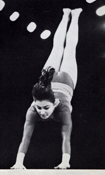

Elena Polevaya (USSR)
1981 World Team Gold Medalist

Elena was born in Gomel (Belorussian SSR) in 1963 and was coached by Boris Shakhnovich at Dinamo.
Competition Results
1977
Intl. Championships of Italy: 1st AA
USSR Cup: 3rd AA
USSR Spartakiade: 5th AA
1978
Jr. European Championships: 9th AA
USSR Cup: 14th AA, 2nd FX, 3rd V, 8th UB
USSR-GDR: 1st Team, 5th AA
1979
Jr. USSR-ITA: 1st Team, 3rd AA
USSR Championships: 9th AA
USSR Cup: 6th AA, 7th UB
USSR Spartakiade: 10th AA
1980
Moscow News International: 7th AA (exhibition)
Riga International: 2nd AA, 1st V, 1st FX
USSR Championships: 9th AA
USSR Cup: 10th AA, 3rd V, 3rd UB, 3rd FX, 7th B
1981
Schoolchildren's Spartakiade: 6th Team, 2nd AA, 2nd UB, 4th V, 6th B
USSR Championships: 2nd AA
USSR Cup: 6th AA, 1st UB, 4th V
World Championships: 1st Team
1983
Belarus Athletes Newspaper Competition: 2nd AA
Coca Cola International: 3rd AA
Medico Cup: 1st AA
USSR Championships: 7th AA
USSR Cup: 1st Team, 20th AA, 5th UB, 7th FX
USSR Spartakiad: 3rd Team
This page was created on December
21, 2002 and was last updated on August 3, 2026.
© Gymn Forum